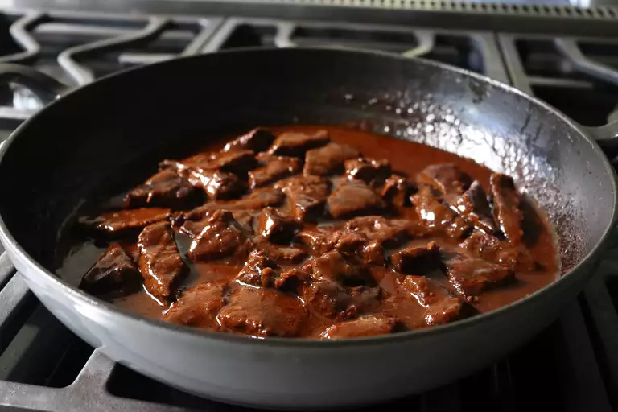

Beef Tips and Tots

Description
Indulge in a hearty, comfort food classic with our Beef Tips
and Tots recipe. Tender chunks of succulent beef are simmered in a savory gravy,
then served over a bed of crispy tater tots. This dish strikes the perfect balance
between rich falvors and satisfying crunch. It's a crowd-pleaser that's easy to make
and even easier to enjoy. Whether for a cozy family dinner or a casual get-together with
friends, Beef Tips and Tots will leave everyone craving for seconds.
Ingredients
- 1 1/2 pounds of beef round steak
- 1 teaspoon kosher salt, or to taste
- 1/2 teaspoon freshly ground black pepper
- 1 tablespoon vegetable oil
- 2 teaspoons tomato paste
- 2 cloves garlic, minced
- 4 tablespoons butter
- 2 tablespoons all-purpose flour
- 2 1/4 cups low-sodium beef broth
- 1 (28 ounce) package frozen bite-size potato ngugets (such as Tater Tots)
Steps
- Slice beef into 3/4-inch strips; then slice these pieces, at an angle, into smaller "tips." Season beef with salt and pepper.
- Heat oil in a large skillet over high heat until shimmering. Transfer in beef, arranging in a single layer.
Let the meat sear until browned, 3 to 5 minutes, before turning over and browning the other side.
- Reduce heat to medium and add tomato paste, garlic, and butter. Stir everything until the butter melts,
and then stir in the flour. Cook and stir for 1 minute.
- Stir in broth. Raise heat to high and bring to a simmer. Reduce to low, cover, and cook until beef is starting to get tender,
about 1 hour and 15 minutes.
- Meanwhile, preheat the oven to 425 degrees F (220 degrees C).
- Uncover, turn heat to medium, and simmer, stirring occasionally, until the sauce has thickened, and the meat is tender, about 30 minutes.
- While meat simmers, bake potato nuggets in the preheated oven until crispy and heated through, 20 to 25 minutes.
- Taste beef tips and adjust the seasoning. Serve immediately over hot potato nuggets.
Go back